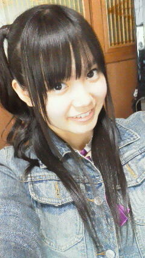
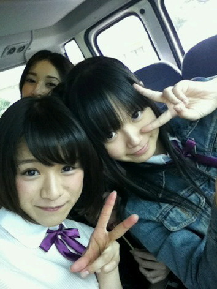
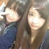
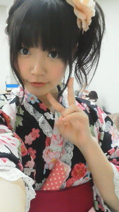
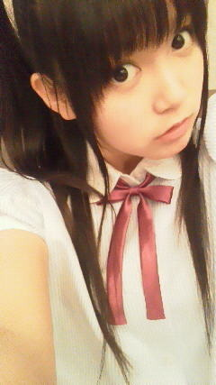
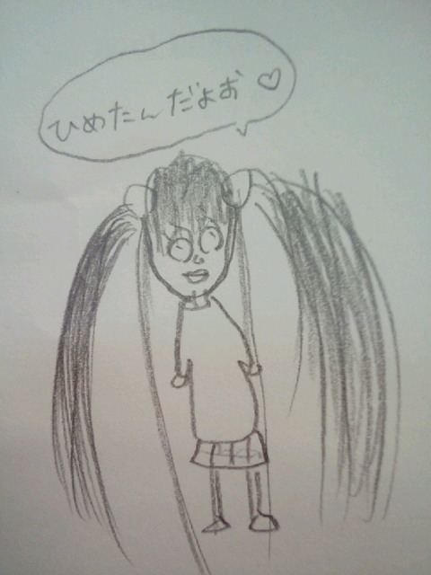

返回列表-BACK TO INDEX
はーい！ひめたん期末テストどう？難しい？
今のところ全問正解者はひとりもおりませーん
テスト回答は最終日に書くつもりなのでみんな追試！(o>ω<o)
ひめきゅん初心者さんって人もいるだろうから問題の解き方を伝授しまーす
Q4とQ2は過去のひめたん大図鑑に答えが載ってます。
ひめたん大図鑑1〜10 1/23〜1/29
ひめたん大図鑑11〜18 5/16〜5/24
あと、ブログの中で触れたことがある質問も結構あるので、
時間がある方はチェックしてみてね。
え？時間がないーっ？
んーしゃーない...
ひめたん大図鑑9 1/28 ひめたん大図鑑17 5/23
を要チェックするべし！
そしてお約束のひめたんからのスペシャルメッセージは
全問正解者だけにわかる仕組み。
自分は絶対全問正解しとる！って方もいると思うので
はーい携帯のメール作成画面を出してー？
(...ガラケー限定かも'`）
本文に自分の回答した数字を順番に打ち込んでみましょう！
文字モードはアルファベットにしてねー
携帯無い人はやスマホの人は、パソコンなどで
「ケータイコード変換（数字→文字）」を検索して数字を入力してみましょう。
アルファベットモードを選んでねっ
なんにも無い人はごめーんね？わら
ちゃーんと自分の回答を入力するようにね？ズルしちゃいけんよー
まっひめきゅんさんにはそんな人おらんと思うけれども♪
どや(^^ゞ
 6/27誕生日でしたっ祝って←
6/27誕生日でしたっ祝って←遅れてごめーんねっ
お誕生日おめでとう∩^ω^∩
みゅみゅと一緒なんてうらやましすぎるわ///
どんないちにちでしたかなー？楽しい誕生日なった？
ちなみに私は6/29誕生日☆(。・・。)← お祝いしてほしいなんて...むっ無理は言わないよ！←
じゃ勝手にお祝いします(^ω^)
お誕生日おめでとう！全然無理なんかじゃないからーっ
これからもひめきゅんさんよろしくね＼(^O^)／
(*´・ω・*)ひめたん
2012/06/29 21:06｜
みゅみゅお誕生日おめでとーう＼(^O^)／
みゅみゅ(若月佑美chan)はひめたんにとってほんとのお姉さんみたいです。
一緒にお泊まりした時はいっぱい話聞いてくれてありがとう！
がんばり屋さんのみゅみゅ。選抜入ってもきらきらしてね///
大好きよー(ω)

はーい
今日からひめきゅん大図鑑だーって思ってた人？
ちょーっとその前に！
 今度さぁ〜ひめきゅんテストやらない？
今度さぁ〜ひめきゅんテストやらない？結構難しい問題とかも作ったりしたりて
結構面白いと思うんだけどねぇ〜
良かったらやってみてくれないかな？
て素直なアイデアをいただいたので、
「ひめきゅん期末テスト」を開催することになりましたー拍手っ
ひめきゅんのみなさんからいただいた質問に
ひめたんは何番を選んだか回答してね＼(^O^)／
Q1.姫たんビームはどこまで届くん？
1. 宇宙まで 2. .世界中どこへでも 3..国内なら大丈夫 4.2メートさきまで 5.近くまでこんと届かんよ
Q2.自分はうさぎ飼ってるんだけど ひめたんは何を飼ってみたい？
1.うさぎ 2. 金魚 3.猫 4.ハムスター 5.犬
Q3.ももクロのどの色が好き？？？ やっぱりピンクかな(笑)？
1.赤 2. ピンク 3. 緑 ４.紫 5.黄色
Q4.ひめかはサイゼのりょーり何が好きー？？
１.小エビのカクテルサラダ 2.ミラノ風ドリア 3.マルゲリータピザ 4.イタリアンハンバーグ 5.ドリンクバー 6.カルボナーラ
Q5.ひめたんの現実逃避の瞬間は？
1.漫画 2.テレビ3.ゲーム 4.お風呂 5.勉強 6.音楽
Q6.言うてほしい関西弁とかある？笑っ
1.なんでやねん ２.すきやねん 3.ぼちぼちでんな 4.もうかりまっか 5.あほちゃう 6.ほな、またね
Q7.好きなかき氷の味はなんですか？
1.オレンジ ２.レモン3.スカイブルー ４.宇治金時 5みぞれ 6.メロン 7.ピーチ 8.いちご
Q8.ひめたんは、習得してみたい言語はありますか?
1.英語 2.中国語 3. フランス語 4. ポルトガル語 5.ドイツ語 6.イタリア語
7.スペイン語 8.韓国語
Q9.ひめたん何フェチ？？
1.瞳 2.耳 3.匂い 4..足 5.前髪 6.背中 7.筋肉 8.血管
Q10.好きなものは先に食べる派？後に食べる派？
1.先に食べる派 2.後に食べる派 3.先にちょっと食べて後で残りを食べる派
Q11.カレーライス、ハンバーグ、とんこつラーメン、豚丼の中で1番好きなんはどれ？
1. とんこつラーメン2.ハンバーグ 3. カレーライス 4.豚丼
11問全部正解したらひめたんからのスペシャルメッセージがあるよ！
満点目指してみなさんもお勉強するしかー(*^^*)

2012/06/28 21:36｜
ぬーん
日曜日は らりん (永島聖羅chan)宅にお泊まりしまーした！
その日はレッスン終わって、らりん宅着いて、
お風呂入って、乃木どこ見て速攻寝ました。
その次の日の朝も早かったからね♪
らりん宅行ったの久々だったなー４ヶ月ぶりとか？
ひめたん爆睡してたんだってねー...
ブログみて始めて知ったわ(´▽｀)ノ
一緒に寝たの。寝る前にお話したの。
何話したか気になるって？言わなーいひみつー///にやにや
とにかくらりんのおうちは落ち着くのよ。好きよー(ω)
またおじゃまさせてね！
あっそういや先週の乃木どこ？で「狼に口笛を」パフォーマンス初披露！
ちょっとだったけどね。見たことないよーって方には新鮮だったかな(^O^)

 俺の誕生日は6月25日だよ。良かったらお祝いして〜。
俺の誕生日は6月25日だよ。良かったらお祝いして〜。お誕生日おめでとう！
ひめきゅんさんで連ちゃんだね(ω)♪さーすがっ
素敵ないちねんになりますようにー...
6月26日が誕生日なんだけどひめたんお祝いしてほしいなぁ
お誕生日おめでとう！
これからもいっぱいいっぱいきゅんきゅんしてくださいねーわらっ
素敵ないちねんになりますように。
 つぎは大阪の全握だ！??
つぎは大阪の全握だ！??俺は、ひめぽんが14日に来れるかどうかが心配で仕方ないっす（笑）
テストと重なりませんようにー(>人<)
ひめたん、今度の期末で補習に引っ掛からんよーに
頑張るけ応援してねー
ここまでパワーを送ってくださいみーなさーんっ
7/7の全握も行くからね！！
東京の全握はひめたん来るのかな？
7月の全握でみれるのカナ？??劼瓩燭鵑舛磴鵑箸い襦
東京は行くよ！
期末テスト受けてから急いで行く！
...そういや全握は久々な気がする。前回の名古屋はおらんかったの。ぐるカー大阪ぶり？
ペア誰かなー。楽しみやあ(。・_・。)
ひめたんは七夕で何をお願いするのかな？？
ひめたんの周りには笹の葉ないけれども、あったらなにおねがいしよっかなー
んーひみつー(*/ω＼*)
ところで、質問を続けているけど、ひめたん何かたくらんでるでしょ？?
なぜばれたしーっ
てへぺろぺろぺろ(*ノω＼*)
...とか言ってみる
お楽しみに
ひめたん大図鑑---だよ~??
もし数えるなら157+18=175になるんだけど、、どうしてるの？
あー更新数に数えたげてくーださいな。
教えてくれてありがとうです(ω)☆
てかブログもうそんなに更新したんだね。はやーい！
ファミリーやひめきゅんさんから寄せられる沢山の質問やアンケート結果は
どうやって管理してるの？
PCでエクセルやアクセスを駆使してデータベースを作成してたりして・・・
そんな器用なことはできません←
ただ、この狭いせまい脳内にひたすらインプットするだけ。
それだけです。どや。

それでは！
これから12日間ほどいつものブログはおやすみさせてください←
ちょっと工夫を凝らした大図鑑やら色々と用意してるのでお楽しみに♪
あと、いっぱいの質問返しもするから見てね！
(*´・ω・*)ひめたん
2012/06/27 07:00｜
プール楽しいね！
なんかね、今までは25メートルしただけで死にそうだったのに
昨日は何時間もひたすら泳ぎよった(^O^)
無理してないよ。楽しくて夢中になったのよー
コツを見つけたの。
そいでちょっと楽に、ちょっと速く泳げるようになったの。
素敵でしょー(^ω^)
あ似顔絵。
「似顔絵好評すぎる。」って画伯に伝えたら、
「よっしゃああああああ！」だそうです(*^^*)
「天才だねー(笑)」
「そっくりだねー(笑)」
(笑)←これ重要。
いやーそんなに誉めてもらったらひめたんも嬉しくなっちゃうよね。
こんなにおちゃめでキュートな似顔絵とそっくりなんて、素敵すぎるよね。
うん嬉しい。
嬉しいよひめたん嬉し...
...、
...ごほっ(以下略)。
てゆかこの似顔絵シリーズ面白いね！
もうシリーズ化してしまおうか。んー考えとく
第一回がにゃにゃせまる(西野七瀬chan)の、
第二回がみゅみゅ(若月佑美chan)の、そして第三回が今回の。
いいじゃん楽しいじゃーん(ω)☆
ゆーわけで乃木坂、学校、地元問わず
ひめたんの知り合いさんでこの記事見た人で絵が好きな人、
ひめたんの似顔絵描いてメールで送ってくださーいな＼(^O^)／
てかみなさんのボウリングのスコアやばーあっ
天才がいっぱいおってびっくりしたー
ひめたんの最高スコアはどれくらいだっけな
悲しいことにあんま覚えてないんだけど、でも３桁は行ってたはず!

 あ、6/24が俺の誕生日だからひめたんに祝ってほしいです...
あ、6/24が俺の誕生日だからひめたんに祝ってほしいです...お誕生日おめでとーう＼(^O^)／
もちろんお祝いしますよーハッピーバースデーね☆
これからも一緒にいろいろ頑張ろうね！
素敵ないちねんになりますよーうにっ
 いちばん蚊に刺されたくない場所はどこですか？
いちばん蚊に刺されたくない場所はどこですか？かお(・ω・)
おでことか刺されたら地味に辛い。
ぱっつんで隠れてるから見えないっちゃ見えないけど
朝に鏡でかお見ます。おでこが蚊に刺されてます。
もう大事件だよー見たらかゆくなるもんだよー(>_<)
ちはる（斎藤ちはるちゃん）が乃木坂浪漫に 初めて出演したけどひめたん観た？
それが、最近日付を超える前に睡魔が襲ってくるのー
ごめんねるんるん。明日土下座するから許してくれーい←
ひめたーんってシャンプー「マシェリ」使ってるだったけ？ んーマシェリ使ってたけどね
最近は「ＬＡＸ」の良さにも気付いた。普通のじゃないやつね。
らっくーす！
「浮気者の俺と握手」っていいんですかい？ ＤＤでもいいの？ねぇさあどれ？ 1.絶対いや。私だけ推して。
2.本当は嫌だけど、まぁ許す
3.いやじゃないと見せかけて、心では(ToT)
4.ぜんぜん気にしない
5.DDの方がいい。
6.DDでなきゃ嫌だ。
3rdの申込始まるから、早めに回答くださいね。
２と３を足して２で割った感じよ。
本当はそりゃ、ひめたんのことだけ見ててほしい。
だけどあんましワガママ言ってこまらせることあったらだめだし
乃木坂は可愛くて素敵な子ばっかだから気持ちはわかるし。
でも...
ほんとは、ひめたんといっぱい握手したいなーて思っていただけると
べりーべりー嬉しい。
この絵を見て、ひめぽんは友達に何てツッコンだの？(・∀・)笑 日「...失笑。」
画「どや。」
皆「すごい似てるー(棒)」
日「ほんとー嬉しい(棒)」
こんな感じだったー。
 ひめたんって、ブラックなん？(笑)
ひめたんって、ブラックなん？(笑)んーん。ぴんく!
(*´・ω・*)ひめたん
2012/06/24 23:36｜
乃木坂って、ここ!
今回はボーリング大会してきました(*^ω^*)
新制服解禁ねーこちらっ

画質悪いけ申し訳ないんじゃけど、ひめたんは青いブラウス着てんの♪
青、紫、オレンジの爽やかな感じになっておりますよ
んーさっすが夏服!
半袖とか夏服ね。このリボンかわういー好きー☆
紺色のプリーツスカートも可愛いんだこれが。
ちなみにいっこ前の制服は
結局最後まで自分でネクタイ結べませんでした。なき
今日の質問ー
あなたのボーリング過去最高スコアは？
ということでボーリングしてきたの。
久々ね。一番最後にボーリングしたのは一年とちょっと前かしら
いっやーまさか一投目に９本倒れるとはね(ω)けろ
ひめたんはやっぱり天才なんかもしれない。
みさみさひめたんねねころってぃーチーム、応援してね☆予選は第２試合だからね
今日学校にツインテしてったら、友達が似顔絵描いてくれたー
のでブログに貼ってみなさんに見ていただこう∩^ω^∩
んーわくわく
似顔絵の感想をよかったら教えてね。画伯にそのまんま伝えますのでね。
あ余談で、画伯は女の子です。
頭良くて、運動できて、優しくて面白くて。
数学のテストの模範解答を写めで送ってーてお願いしたら
わざわざお手製の解説まで書いて送ってくれる、素敵な子。
絵心？言うまでもなく天才才ですよ(^^)
てれれれれーん

 素朴な疑問だけど文字に色が入ってるけど何で打ってるんですかぁ！？
素朴な疑問だけど文字に色が入ってるけど何で打ってるんですかぁ！？ひめたんので文を全部打ったのちに
ままのスマホに送って、そっちで文字色を変える。
地味に大変な作業です(ω)いいの、それでより読みやすくなるんなら。
 ひめたんは暑い夏どうやって乗り切る？？
ひめたんは暑い夏どうやって乗り切る？？すでにばてばてよー。
もうねーいっちゃんいい方法はお外に行かないことだと思う。
毎日お部屋ん中で冷房たいて冷たいもん食べとったら、そのうち体が
「あれー今は冬かしら」ってなるだろうから、そしたら完璧☆
 浮気者の俺と握手してくれますか？ww
浮気者の俺と握手してくれますか？wwひめたんはいいけど、推しの子に申し訳ない(´・_・`)
推しめんの許可がおりたらかもーん♪
ひめたんビームやってみたら、意外と受けよかった！
今後も使ってみていい藁？
ひめたんビームはひめたんにしか放てないはず...
一体どこで修得したのよー？
こうなったらひめたんビーム広めるしかー!!!
次に会う時また日芽香の笑顔見れるんだよね？
それは約束しましょう(*^ω^*)にこ
 今度ひめたんに握手しに行っていい
今度ひめたんに握手しに行っていい是非ぜひ来てきて!
ゆっくりお話ししましょーうね＼(^O^)／
何か話したいことあったら考えてみてください。
なんもなきゃー...
どうしよう。ま楽しくすごしましょう。うんそうしよう
ひめたん握手会大好きよー☆
 もうすぐテストやから応援ちょうだい
もうすぐテストやから応援ちょうだいあれれ一緒じゃん!ひめたんも２週間後テストなの。いっしょー
一緒に頑張りましょーう＼(^O^)／
徹夜でお勉強してるからって、授業で寝ちゃだめよ。
...とか言える立場じゃない。ううう
自分は高知県出身なんですがひめたんは高知県には来た事がありますか？
高知は行ったことなーい。高知県出身とかゆー友達も周りにおらんなあ。
なんとなく。なんとなくだけど
広島から高知までって車で行けそうな気がする(^^)近いイメージよ。
最近どうっすか？w
来たこれ。わらわら
何か、1日が終わるのが早いです。
やりたいこといっぱいあるのに、何もできんまま後悔しながら寝る...
そこである日考えてみたの
1日が30時間あったら、ひめたんはこんなに忙しくなかったのかなって。
...。
あ結論から言うと、
時間が増えたら、そのぶん授業もお仕事も増えて課される課題も増えて
それでくたくたになるんだけど、そのぶん睡眠時間も増えて
プラマイぜろ、なはず。
 ひめたんは父の日のプレゼントにどんなお洋服を選んだのかな？
ひめたんは父の日のプレゼントにどんなお洋服を選んだのかな？黒と白のシックなやつ!
前にレモンいろーの爽やかーな感じとか、ストライプの爽やかーな感じとか
いろいろプレゼントしたことあるから、
今回はあえて抑えてみたのです(ω)
ひめたんが男の子だったらぱぱさんになにしてあげますか！？
何してほしいー？
スポーツ観戦に連れてってあげるとか？
いやいや娘でも十分連れてってあげれるわー...
(*´・ω・*)ひめたん
2012/06/22 23:18｜
返回列表-BACK TO INDEX